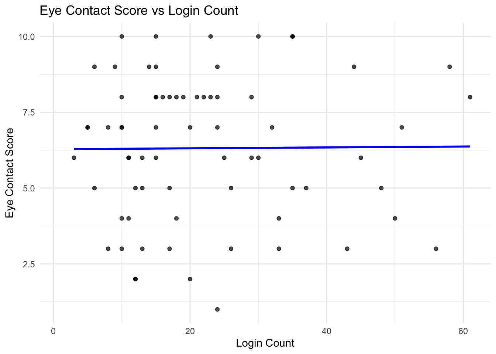
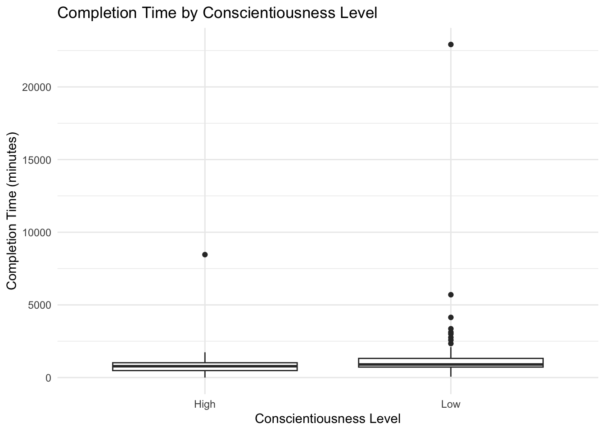
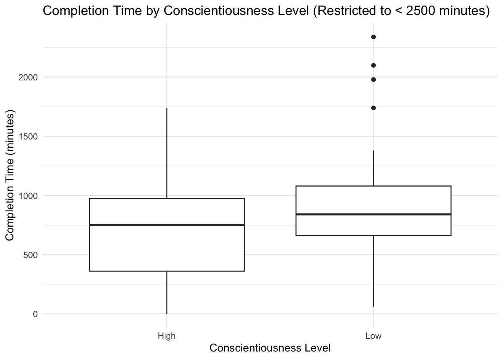
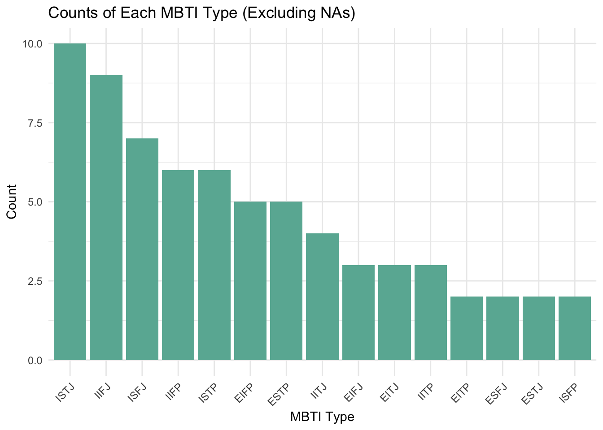
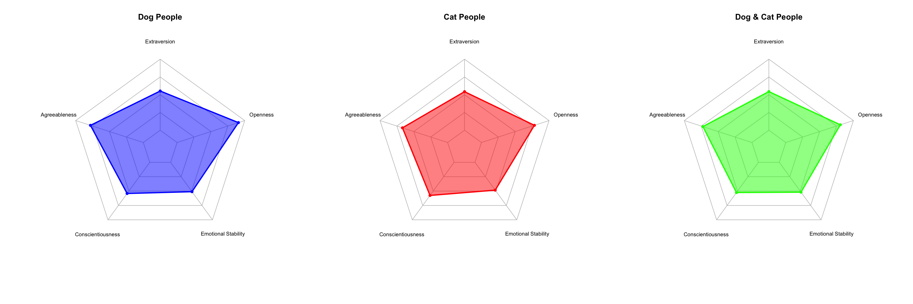
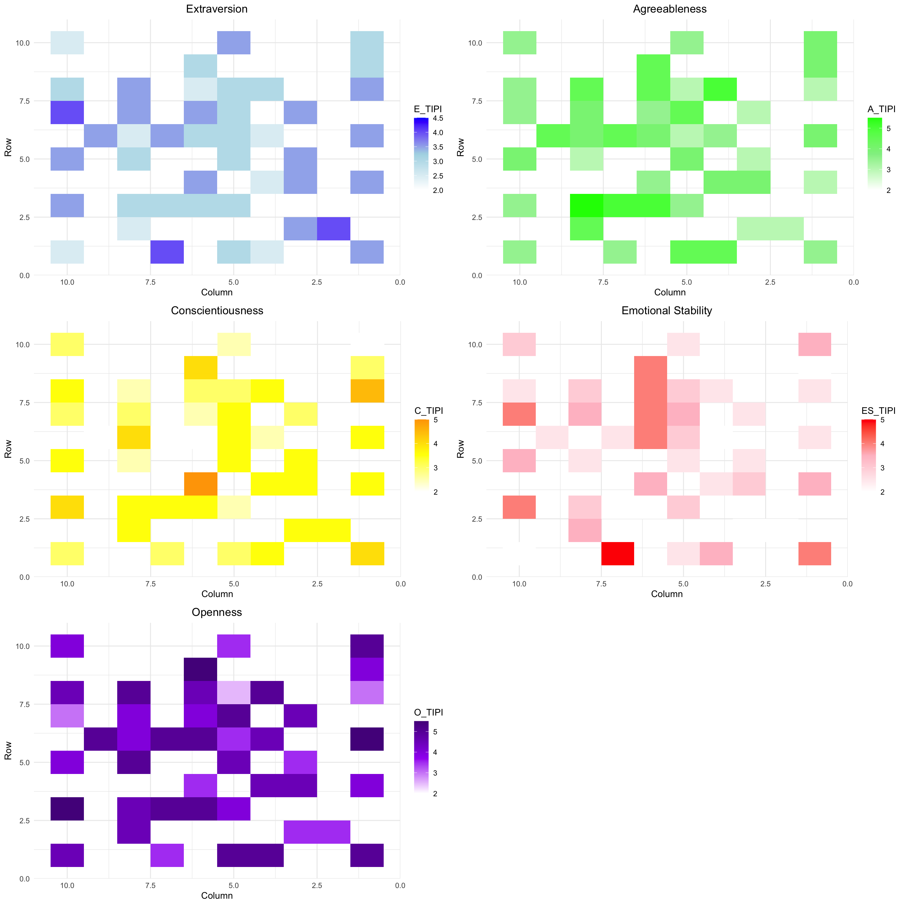
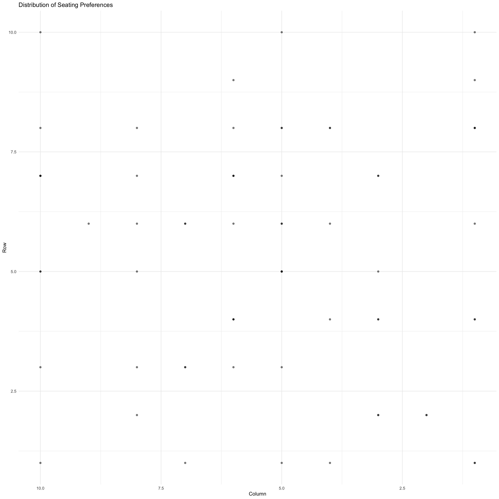
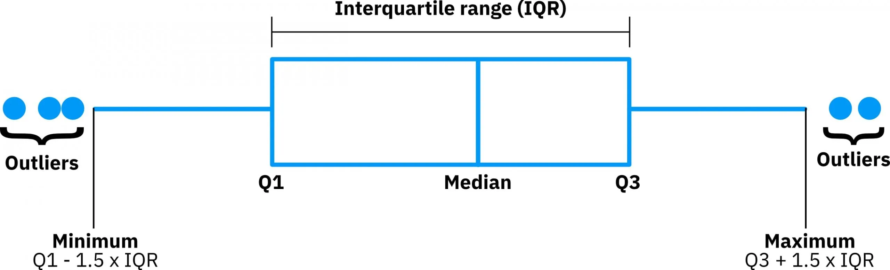
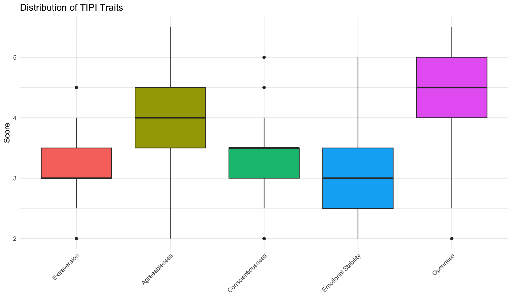
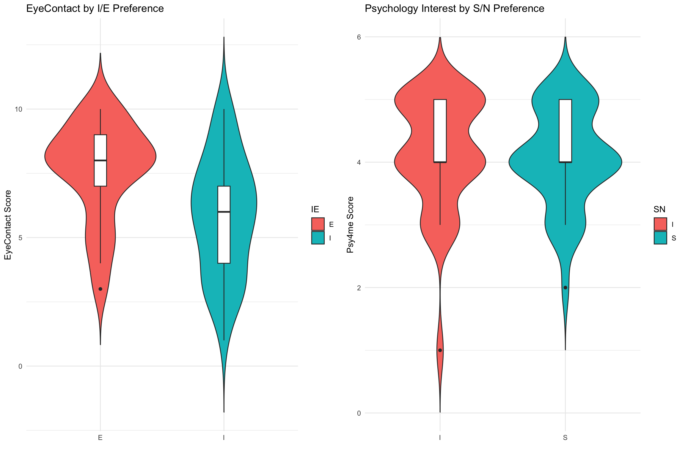

library(tidyverse)library(plotly)library(knitr)# Load and prepare the datadata <-read_csv("materials/data/Y1W3_data.csv", na =c("", "NA", "#N/A"))student_data <- data %>%select(PokeNumber, PokeName, PokeImage, LoginCount, Q_Scale, CompTime, Image) %>%mutate(HasLoginCount =!is.na(LoginCount) & LoginCount !=0,SubmittedQuestions =!is.na(CompTime) & CompTime !="0"& CompTime !="",SubmittedImage =!is.na(Image) & Image !="" )# Calculate engagement statisticstotal_students <-nrow(student_data)active_students <-sum(student_data$HasLoginCount)questions_submitted <-sum(student_data$SubmittedQuestions)image_submitted <-sum(student_data$SubmittedImage)# Create a data frame for the engagement stagesengagement_data <-data.frame(Stage =c("Total Enrolled", "Active (Non-zero LoginCount)", "Submitted Questions", "Submitted Image"),Count =c(total_students, active_students, questions_submitted, image_submitted))# Calculate percentagesengagement_data$Percentage <- engagement_data$Count / total_students *100# Reorder the stages to be in descending orderengagement_data <- engagement_data %>%arrange(desc(Count))# Display the engagement datakable(engagement_data, caption ="Student Engagement Summary", digits =2)
Student Engagement Summary
Stage
Count
Percentage
Total Enrolled
109
100.00
Active (Non-zero LoginCount)
97
88.99
Submitted Questions
68
62.39
Submitted Image
41
37.61
Code
# Create a visual representation of the engagementp <-plot_ly(engagement_data, x =~reorder(Stage, -Count), y =~Count, type ='bar', text =~paste(Count, " (", round(Percentage, 1), "%)"), textposition ='auto',marker =list(color =c('#1f77b4', '#2ca02c', '#d62728', '#9467bd'))) %>%layout(title ="Student Engagement Stages",xaxis =list(title ="Stage"),yaxis =list(title ="Number of Students"),showlegend =FALSE)# Display the plotp
Visualisation of Student Data
This analysis covers levels of measurement, measures of central tendency, variance, and various plot types using the student data collected.
1. Levels of Measurement
Nominal:
MBTI (Myers-Briggs Type Indicator)
Coin (Heads or Tails)
DogCatBoth (Preference for pets)
InsectApocalypse preference
Ordinal:
EyeContact (Likert or scale responses)
Ten Item Personality Inventory scores (OCEAN)
Interval/Ratio:
Count of VLE Logins so far [LoginCount]
Survey Completion Time [CompTime - minutes]
2. Central Tendency and Variance
Let’s calculate these for LoginCount and the Extraversion (TIPI) score:
# Librarieslibrary(ggplot2)# Assuming `data` is your datasetggplot(data, aes(x = LoginCount, y = EyeContact)) +geom_point(alpha =0.7) +geom_smooth(method ="lm", color ="blue", se =FALSE) +# Adds a trend linelabs(title ="Eye Contact Score vs Login Count",x ="Login Count",y ="Eye Contact Score") +theme_minimal()

5a. Box Plot: CompTime by Conscientiousness Level
Code
# Create high/low conscientiousness groupsdata$C_Group <-ifelse(data$C_TIPI >median(data$C_TIPI, na.rm =TRUE), "High", "Low")# Ensure CompTime is numeric and remove NAs for plottingggplot(data %>%filter(!is.na(CompTime)), aes(x = C_Group, y =as.numeric(CompTime))) +geom_boxplot() +labs(title ="Completion Time by Conscientiousness Level",x ="Conscientiousness Level",y ="Completion Time (minutes)") +theme_minimal()

5b. Box Plot: CompTime by Conscientiousness Level
Code
# Create high/low conscientiousness groupsdata$C_Group <-ifelse(data$C_TIPI >median(data$C_TIPI, na.rm =TRUE), "High", "Low")# Filter data to include only responses with CompTime less than 2500 and remove NAsggplot(data %>%filter(!is.na(CompTime) &as.numeric(CompTime) <2500), aes(x = C_Group, y =as.numeric(CompTime))) +geom_boxplot() +labs(title ="Completion Time by Conscientiousness Level (Restricted to < 2500 minutes)",x ="Conscientiousness Level",y ="Completion Time (minutes)") +theme_minimal()

6. MBTI Count Matrix
Code
# Librarieslibrary(dplyr)library(ggplot2)# Exclude NAs and count occurrences of each MBTI typembti_counts <- data %>%filter(!is.na(MBTI)) %>%# Exclude NAsgroup_by(MBTI) %>%summarize(Count =n()) %>%arrange(desc(Count))# Display the countsprint(mbti_counts)
# Plot the counts using ggplot2ggplot(mbti_counts, aes(x =reorder(MBTI, -Count), y = Count)) +geom_bar(stat ="identity", fill ="#69b3a2") +labs(title ="Counts of Each MBTI Type (Excluding NAs)",x ="MBTI Type",y ="Count") +theme_minimal() +theme(axis.text.x =element_text(angle =45, hjust =1))

7. TIPI Radar Charts by Pet Preference
Code
# Librarieslibrary(dplyr)library(fmsb) # For radar charts# Function to create radar chart with custom colorcreate_radar_chart <-function(data, title, color) {# Prepare radar data with max and min values for scaling radar_data <-rbind(c(5, 5, 5, 5, 5), # Max valuesc(1, 1, 1, 1, 1), # Min values data )colnames(radar_data) <-c("Extraversion", "Agreeableness", "Conscientiousness", "Emotional Stability", "Openness")# Create radar chartradarchart(radar_data, pcol = color, # Line colorpfcol =adjustcolor(color, alpha.f =0.5), # Filled colorplwd =2, # Line widthplty =1, # Line typecglcol ="grey", # Grid colorcglty =1, # Grid line typeaxislabcol ="grey", # Axis label colorcaxislabels =seq(1, 5, 1), # Axis label valuescglwd =0.8, # Grid line widthvlcex =0.8# Label size )title(title) # Add chart title}# Prepare data for each groupdog_people <- data %>%filter(DogCatBoth =="Dogs") %>%select(E_TIPI, A_TIPI, C_TIPI, ES_TIPI, O_TIPI) %>%summarise(across(everything(), mean, na.rm =TRUE))cat_people <- data %>%filter(DogCatBoth =="Cats") %>%select(E_TIPI, A_TIPI, C_TIPI, ES_TIPI, O_TIPI) %>%summarise(across(everything(), mean, na.rm =TRUE))both_people <- data %>%filter(DogCatBoth =="Both") %>%select(E_TIPI, A_TIPI, C_TIPI, ES_TIPI, O_TIPI) %>%summarise(across(everything(), mean, na.rm =TRUE))# Set up plotting area to have 3 plots side by sidepar(mfrow =c(1, 3))# Create radar charts with different colorscreate_radar_chart(dog_people, "Dog People", "blue")create_radar_chart(cat_people, "Cat People", "red")create_radar_chart(both_people, "Dog & Cat People", "green")

8. Heatmaps for Seating Preferences and TIPI Traits
Code
# Librarieslibrary(ggplot2)library(gridExtra)library(dplyr)# Prepare seating dataseating_data <- data %>%select(Row, Column, E_TIPI, A_TIPI, C_TIPI, ES_TIPI, O_TIPI) %>%na.omit()# Function to create heatmap with flipped x-axis and smooth coloring for each traitcreate_heatmap <-function(data, trait, title, colors) {ggplot(data, aes(x = Column, y = Row, fill = .data[[trait]])) +geom_tile() +scale_x_reverse() +# Flip the x-axisscale_fill_gradientn(colors = colors) +# Use custom colors for smoother gradientlabs(title = title, x ="Column", y ="Row") +theme_minimal() +theme(plot.title =element_text(hjust =0.5))}# Color palettes for each traitcolors_extraversion <-c("white", "lightblue", "blue")colors_agreeableness <-c("white", "lightgreen", "green")colors_conscientiousness <-c("white", "yellow", "orange")colors_emotional_stability <-c("white", "pink", "red")colors_openness <-c("white", "purple", "purple4")# Create heatmaps for each trait with different color scalesplots <-list(create_heatmap(seating_data, "E_TIPI", "Extraversion", colors_extraversion),create_heatmap(seating_data, "A_TIPI", "Agreeableness", colors_agreeableness),create_heatmap(seating_data, "C_TIPI", "Conscientiousness", colors_conscientiousness),create_heatmap(seating_data, "ES_TIPI", "Emotional Stability", colors_emotional_stability),create_heatmap(seating_data, "O_TIPI", "Openness", colors_openness))# Arrange plots in a gridgrid.arrange(grobs = plots, ncol =2)

Code
# Scatter plot of seating distribution with flipped x-axisggplot(seating_data, aes(x = Column, y = Row)) +geom_point(alpha =0.5) +scale_x_reverse() +# Flip the x-axislabs(title ="Distribution of Seating Preferences", x ="Column", y ="Row") +theme_minimal()

note: BoxPlot Basics

9. Compact Boxplots: TIPI Traits
Code
tipi_data <- data %>%select(E_TIPI, A_TIPI, C_TIPI, ES_TIPI, O_TIPI) %>%pivot_longer(cols =everything(), names_to ="Trait", values_to ="Score") %>%mutate(Trait =factor(Trait, levels =c("E_TIPI", "A_TIPI", "C_TIPI", "ES_TIPI", "O_TIPI"),labels =c("Extraversion", "Agreeableness", "Conscientiousness", "Emotional Stability", "Openness")))ggplot(tipi_data, aes(x = Trait, y = Score, fill = Trait)) +geom_boxplot() +labs(title ="Distribution of TIPI Traits", x ="", y ="Score") +theme_minimal() +theme(axis.text.x =element_text(angle =45, hjust =1),legend.position ="none")

10. Violin Plots: EyeContact and Psy4me by MBTI Dimension
Code
library(ggExtra)library(gridExtra)library(ggplot2) # Explicitly load ggplot2 for clarity# Filter and mutate data without pipesmbti_data <-subset(data, !is.na(MBTI))mbti_data$IE <-substr(mbti_data$MBTI, 1, 1)mbti_data$SN <-substr(mbti_data$MBTI, 2, 2)mbti_data$TF <-substr(mbti_data$MBTI, 3, 3)mbti_data$JP <-substr(mbti_data$MBTI, 4, 4)# Create the first plotp1 <-ggplot(mbti_data, aes(x = IE, y = EyeContact, fill = IE)) +geom_violin(trim =FALSE) +geom_boxplot(width =0.1, fill ="white") +labs(title ="EyeContact by I/E Preference", x ="", y ="EyeContact Score") +theme_minimal()# Create the second plotp2 <-ggplot(mbti_data, aes(x = SN, y = Psy4me, fill = SN)) +geom_violin(trim =FALSE) +geom_boxplot(width =0.1, fill ="white") +labs(title ="Psychology Interest by S/N Preference", x ="", y ="Psy4me Score") +theme_minimal()# Arrange the plots side by sidegrid.arrange(p1, p2, ncol =2)

11. Scatterplots: Exploring Relationships
Code
p3 <-ggplot(data, aes(x = E_TIPI, y = EyeContact, color = DogCatBoth)) +geom_point(alpha =0.6) +geom_smooth(method ="lm", se =FALSE) +labs(title ="Extraversion vs EyeContact", x ="Extraversion Score", y ="EyeContact Score") +theme_minimal()p3